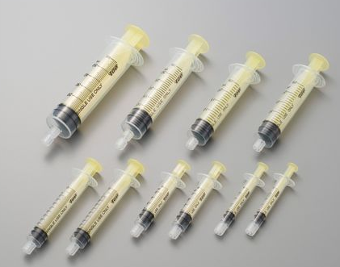
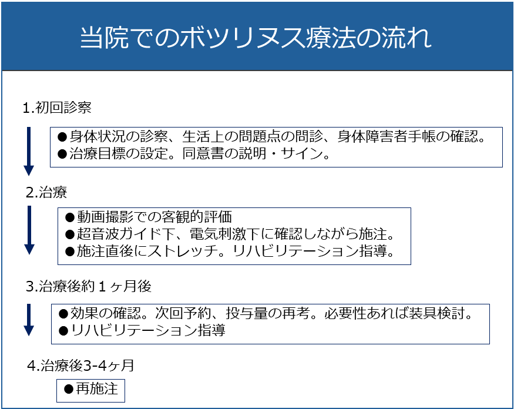
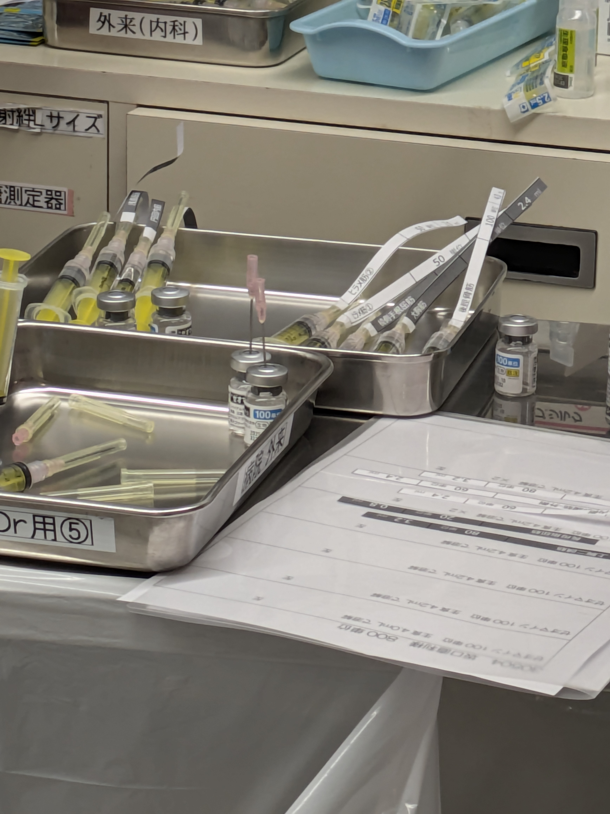

ボトックス治療の概要
緒方勝也
内容
- ボトックスとは
- ボトックス(製品)の紹介
- 作用
- 処置の流れ
- 浅指屈筋(前腕の指の筋)を例に
- 処置での注意点
ボトックスとは
- 商品名です
- 一般名はボツリヌストキシン(毒素)と言います
- ボトックスでないボツリヌス毒素は?
- ゼオマインというものがあります(あとナーブロックとか)
- ゼオマインとボトックスは違うの?
- ほぼ同様です
- 1バイアル50-100単位、最大使用可能量600単位-800単位(ゼオマイン)
- 値段がゼオマインの方が安いです
- (おそらく)病院の売上の関係でボトックスのみ採用になっています
ボツリヌス毒素は何に効いてるの?
- 当施設では痙縮に主に使っています
- (片側)顔面けいれん、眼瞼けいれん、痙性斜頸、多汗症などにも適応
- しわ取りにも利用されていますが、保険適応外です
- 海外ではジストニアや片頭痛にも適応があります
- 筋緊張を緩和することで効果を発揮します
- 筋力アップの薬ではありません
- 痙縮という抵抗を減らすことで動きが改善する側面はあります
ADL上どういった効果が期待できる?
痙縮の緩和により
-
上肢の挙上、肘の進展
- 着衣動作
-
手指の進展、開散
- モノへの到達、握り動作
- 爪切り
- 手指衛生
- 足内反、尖足の緩和
- 歩様の安定
ボトックスによる治療前後の変化
あまりよい動画がなかったので、書痙の例
どのくらいの時間経過で効く?
- 2-4週で効果発現、最大になると言われています。
- 3か月ほど持続するのが一般的です

ボツリヌス毒素てそもそも何?
- ボツリヌス菌が産生する毒素です
ボツリヌス菌
- 嫌気性菌、土壌中などに生息します
- からしレンコン事件で大きな問題になりました(1980年代)
- 乳児にハチミツだめ、の理由です
- 推定致死量：体重1kgあたり1μg
- ボトックスの量はこの数万分の1だそうです
- 生物兵器として歴史的には開発が進められた：廃棄がちょっと厳しい
作用機序
- 運動神経から神経伝達物質(アセチルコリン)が放出され、筋肉の受容体で受けると筋収縮が起こります
- ボツリヌス毒素はこのアセチルコリンの放出を抑える働きをします
副作用
- 過量投与で筋の脱力が生じます
- 四肢痙縮では(筋が大きいので)脱力まで生じることは少ないです
- (筋が小さい)顔面けいれんなどでは注意を要します
- 脱力があっても1か月程度で緩和します
副作用ではないですが
- 抗体が生じ効果が減弱する例があります
- 短い間隔で繰り返し施注すると抗体ができやすいと言われ、3か月(12週)以上あけるルールになっています
ボトックスの流れは?- 浅指屈筋の例 -
-
患側をDrに近くなるようにして仰臥位をとります
-
前腕内側~腹側から穿刺するので、脇が開くようにしたり、肘屈曲位でスペースを確保します
-
エコーを当てて標的筋を同定します
- 一部一番表面に来ますが、しばしば他の筋(橈側手根屈筋など)の下に位置します
ボトックスの流れ-続き
- エコーガイドで針先を標的筋に
進めます- 血管や神経が経路上にないか
エコーで評価します - 針先がわかりにくいですが、筋の変形や動きをみて評価します
- 血管や神経が経路上にないか

ボトックスの流れ-続き2
- (確認のためしばしば) 電気刺激します
- 筋に入っていると筋の収縮が生じ、指が屈曲します
- 標的筋に入っていても時に収縮しないことがあります。悩みます
- しばしば針先を少し移動させて再度刺激します
- 数回位置を変えても反応が得られなければエコーを頼りに場所を同定します

- 液を注入します：1箇所1ml(25単位)を目安に注入していますが、10単位刻みの施設もあるようです
施注風景

なぜ黄色のシリンジと普通のシリンジが分かれている?
- 電気刺激用の針がロック式になっていて、通常のシリンジと互換性がありません

- ロック式シリンジは高い(そうな)ので、必要な分(電気刺激する分)だけロック式を使(うように指導され)っています
溶解する生食の量はどうやって決まっている?
- 現在は1バイアル (基本50単位) 2ml(調製後)になるよう、2.1-2.2ml 生食を引いて
います - 通常半分 (25単位=1ml)ずつ施注しています
- あまり厳密に刻んでないので、2.1-2.2ml生食を引いてもらえれば大丈夫です
- 先の図で示したように生食だけでも(プラシーボ)効果があったり、薄めた方が広がるので、生食は多い方がよいのではないかという意見があります
- 50単位を1-4mlで溶解するくらいがよくある方法です
処置の段取りと看護師の介助 (前腕、電気刺激ありの場合)
| 介助 | 処置 |
|---|---|
| 1. ボトックスのシリンジ渡す | 1. ボトックスのシリンジを取付け |
| 2. 酒精綿を渡す | 2. 消毒 |
| 3. 待機 | 3. 穿刺・施注 |
| 4. 待機 | 4. 1本施注終わり |
| 5. 生食を渡す | 5. 生食でフラッシュ |
| 1に戻る | 1に戻る |
| 6. ブラッドバンを渡す | 6. 前腕が終わったらブラッドバン貼付 |
時々5のフラッシュを忘れて1に飛んだり、6に飛んだりするので、すいませんが対応お願いします

施注後の指導
- 当日は入浴は控える(シャワーは可)
- 自宅でストレッチを頑張る
- 一度で効果が出ないので3,4回量の調整などを継続する
福リハでの処置風景
- 看護師さんが調製作業を行っていました
- 生食を注入後1分くらい置いてる感じでした
- 100単位+4.2 cc生食(5ccシリンジ)を基本にしています

生食を注入する針

- 全てロック針で統一
準備の工夫
- ボトックスのシリンジに部位と量を記載したラベルを貼付しています
- あらかじめ計画して、A4印刷-> 裁断して用意するそうです
- 1筋あたりの単位数、量(ml)の一覧があり、1筋ごとにシリンジで吸引
- 5mlシリンジを基本

その他気が付いたこと
- 1人15-30分、5-7人/1.5時間
- 2台分スペース：次の患者をスタンバイさせられる
- 全ての筋でエコー+電気刺激
- エコーの同定を自信をもって行っている
- エコー画面をミラーリングして大型モニタで見ている
- エコー係と施注係が横に並んで処置できる
まとめ
業務効率化と精度向上のため工夫を重ねたいと思います
ご清聴ありがとうございました
何か気になることがあればどうぞ